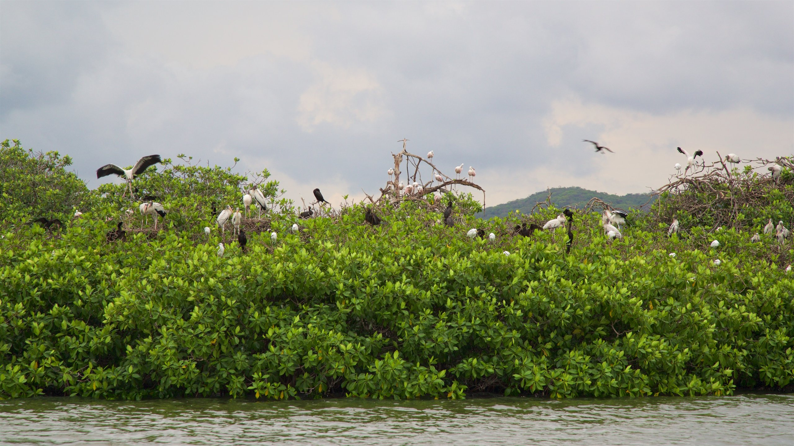

En la costa del estado de Oaxaca encontramos un tesoro natural, la hermosa localidad de Chacahua.
Una de las Áreas Naturales Protegidas más representativas de la costa de Oaxaca, es el Parque Nacional Lagunas de Chacahua, que comprende la Bahía y Laguna de Chacahua y las lagunas de Tianguisto y Pastoría en el estado de Oaxaca.
Este increíble tesoro mexicano, fue decretado el 09 de julio de 1937 por representar un reservorio natural que sirve de alimentación, refugio y protección de especies propias de estos ecosistemas.
Entre los servicios ambientales que brinda este increíble lugar destacan: la captura de carbono, la producción de oxígeno, el valor estético para el turismo, la producción de alimentos para diferentes organismos como el camarón, recarga de acuíferos y mantenimiento de la biodiversidad.
Chacahua en idioma mixteco significa “Lugar donde abundan los camarones”, rasgo histórico que señala la riqueza productiva de esta Área Natural Protegida.
Se trata de un lugar rodeado de increíbles playas, lagunas bioluminiscentes y una impresionante biodiversidad.
Parque Nacional Lagunas de Chacahua es una reserva natural y turística que se encuentra al sur de México.
Chacahua tiene una rica historia cultural, ya que ha sido habitada durante miles de años por diversas comunidades indígenas.
A lo largo de los años, ha pasado por diversas etapas, como la época prehispánica, la época colonial y la época moderna.
El Parque Nacional Lagunas de Chacahua se encuentra en la costa del estado de Oaxaca y cuenta con una superficie de 14,560 hectáreas.
El parque está formado por un complejo de lagunas costeras, manglares y dunas costeras, que albergan una gran diversidad de flora y fauna.
| Tipo | Especies |
|---|---|
| Tipo de vegetación | Selva Perennifolia, Selva Subcaducifolia, Vegetación de Dunas Costeras, Vegetación Hidrófila, Manglar |
| Flora | Corzo, Guano redondo, Mangle rojo, Mangle blanco, Mangle negro, Mangle botoncillo, Sabino, Guayacán |
| Fauna | Oso hormiguero, Coatí, tejón, Ocelote, tigrillo, Tigirllo, ocelote, margay, Puercoespín, Jaguarundi, leoncillo, Nutria de río, Pajaro bobo, Águila pescadora, Pelicano café, Cocodrilo americano, Cocodrilo de pantano, Iguana negra, Escorpión, Boa, boa constrictor |
| Especies endémicas | Loro Corona Lila, Anolis del Pacífico, Casique Mexicano, Culebra Guardacaminos Rayada, Culebra Cabeza Surcada, Chicoteadora, Musaraña Desértica Sureña, Mulato Azul, Chachalaca Pálida, Colorin Pecho Naranja, Colorín Pecho Naranja, Colorín Vetridorado, Tortuga de Monte Payaso, Culebra Parchada Del Pacífico, Culebra Matorralera, Roño de Árbol, Encinela de Selva, Conejo, Salta paredfeliz, Coa citrina, Mirlo dorso canela, Lagartija de Árbol del Pacífico |